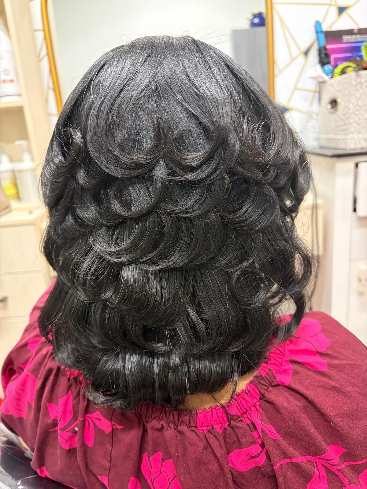
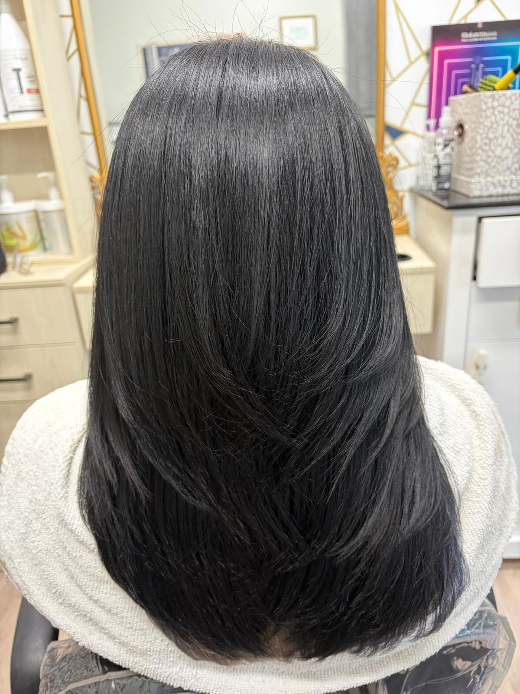
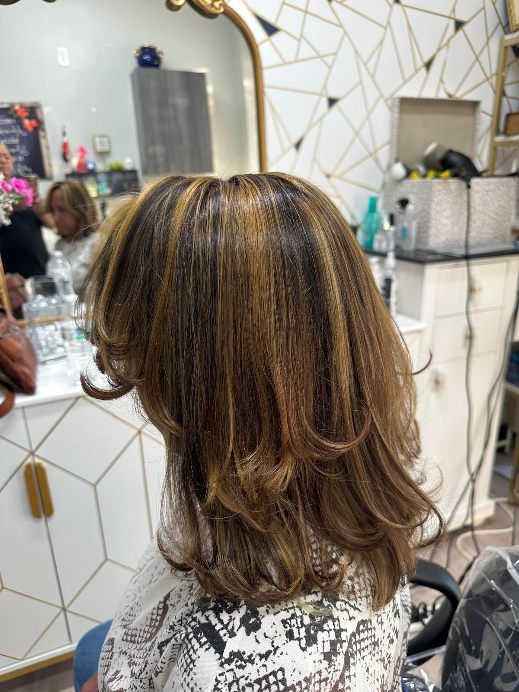
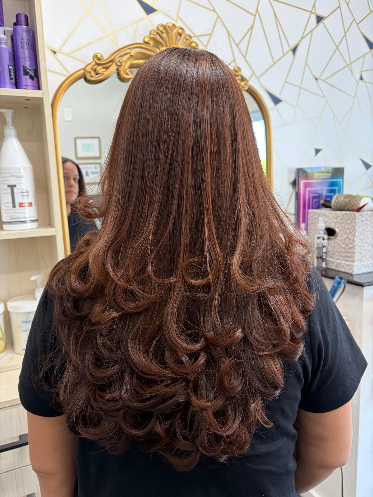
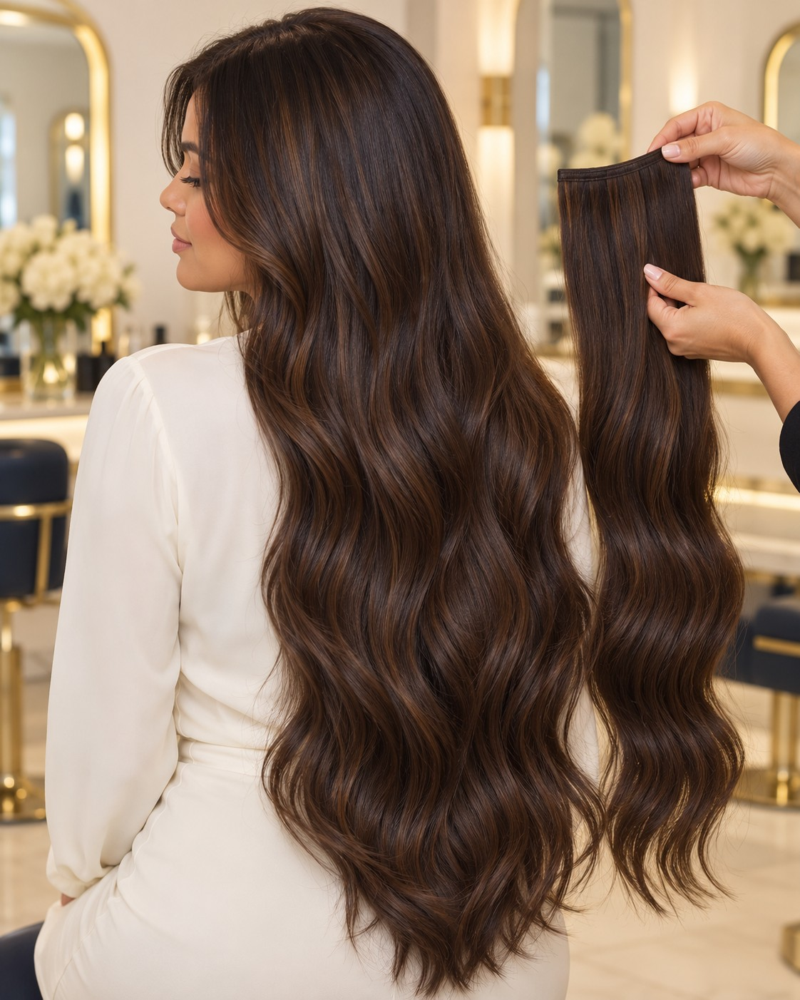
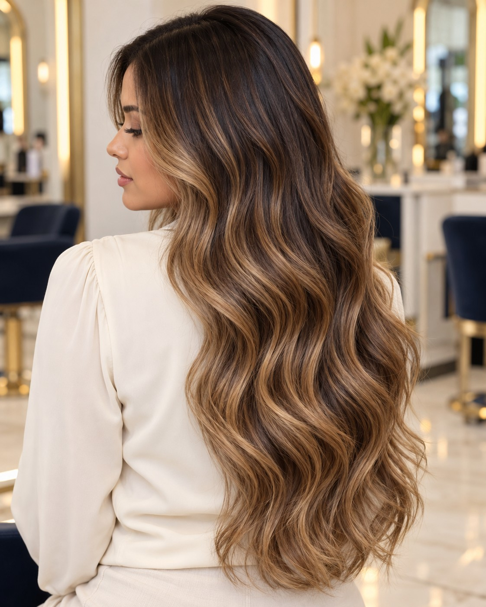
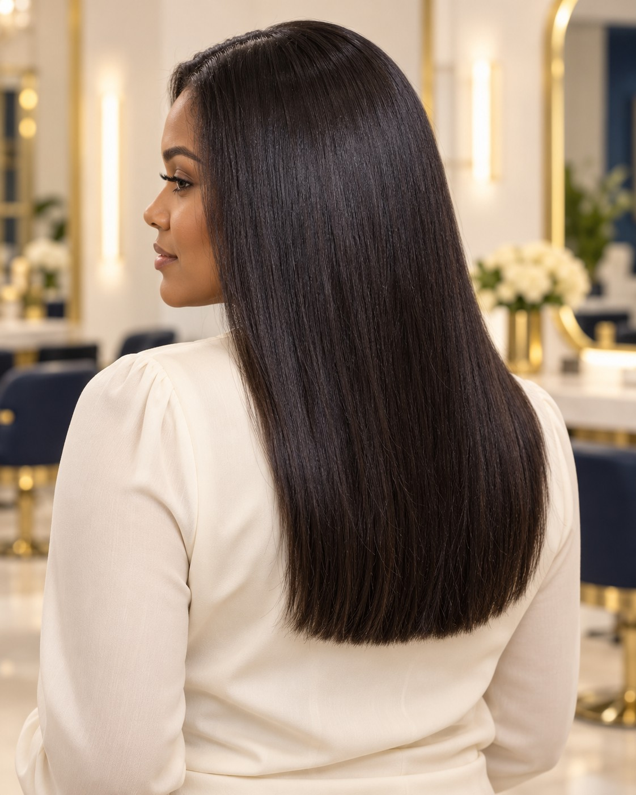
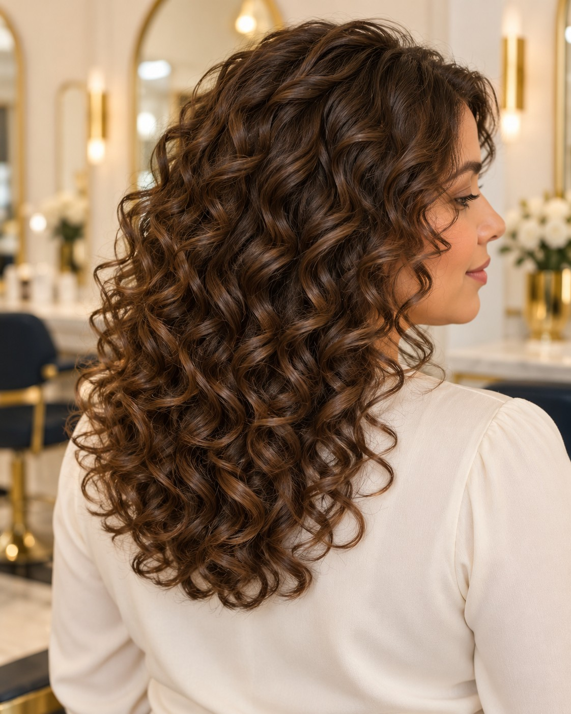

Tu próximo look,
en buenas manos.
Forma, color, textura y movimiento. Descubre las opciones y conversemos sobre la mejor elección para ti.

Cortes y peinados
Un corte que realza tus facciones y un peinado que acompaña tu estilo. Trabajamos la forma, las capas y el movimiento según tu cabello y tu rutina.
Desde mantener tu corte hasta renovar tu look con un secado o peinado. Comparte tu referencia y conversemos sobre el acabado que deseas.
Consultar este servicio ↗
Tratamientos de keratina
Una opción para mejorar la manejabilidad del cabello y suavizar la apariencia del frizz. El tratamiento se elige después de valorar tu textura y los procesos anteriores.
Consulta el producto, la compatibilidad con tu cabello y los cuidados posteriores. El resultado y su duración varían según el cabello y el mantenimiento.
Consultar este servicio ↗
Mechas e iluminaciones
Aporta luminosidad y dimensión con mechas distribuidas según el efecto que buscas. Podemos conversar sobre un contraste sutil o una iluminación más marcada.
La propuesta considera tu color de base, el estado del cabello y el mantenimiento que deseas. Trae una foto de inspiración para orientar la consulta.
Consultar este servicio ↗
Coloración de cabello
Renueva tu tono, aporta profundidad o consulta por cobertura de canas. Diseñamos una propuesta de color acorde con tu estilo y el historial de tu cabello.
Antes del servicio conversamos sobre coloraciones previas, el tono deseado y los cuidados necesarios para mantenerlo.
Consultar este servicio ↗
Extensiones de cabello
Explora opciones para añadir longitud o volumen y ampliar las posibilidades de tu look. La elección se adapta a tu cabello y al resultado que deseas.
Consulta los tipos disponibles, la colocación y el mantenimiento. La técnica y los detalles se acuerdan después de una valoración personalizada.
Consultar este servicio ↗
Balayage
Una técnica de coloración para crear transiciones de luz y profundidad. Buscamos una combinación de tonos que acompañe tu base y el movimiento de tu cabello.
Comparte el nivel de aclaración que te gustaría lograr. La propuesta y las sesiones necesarias dependen del punto de partida y de los procesos previos.
Consultar este servicio ↗
Alisado químico
Un servicio de modificación química de la textura para quienes buscan reducir el rizo. Requiere una valoración previa del cabello y de su historial de tratamientos.
Consulta si este servicio es adecuado para ti, cómo se trabaja el crecimiento y qué cuidados posteriores necesitará tu cabello.
Consultar este servicio ↗
Permanentes
Una opción para crear ondas o rizos mediante un proceso químico. Conversamos sobre la forma, la definición y el volumen que buscas antes de elegir el servicio.
La viabilidad depende del estado del cabello y de los procesos anteriores. Te orientamos sobre el mantenimiento y el peinado posterior.
Consultar este servicio ↗Resolvemos tus dudas.
¿Cómo conozco el precio de mi servicio?
Comunícate con Belkis y comparte el servicio que deseas, el largo de tu cabello y cualquier proceso previo. El precio y la duración se confirman antes de reservar.
¿Puedo llevar una foto de inspiración?
Sí. Una referencia ayuda a conversar sobre tonos, forma y acabado. La propuesta se adapta a tu base actual y a las características de tu cabello.
¿Cómo solicito una cita?
Llama al +1 (919) 802-7417 o escribe por Instagram. La cita queda confirmada cuando el salón acuerde contigo la fecha y la hora.